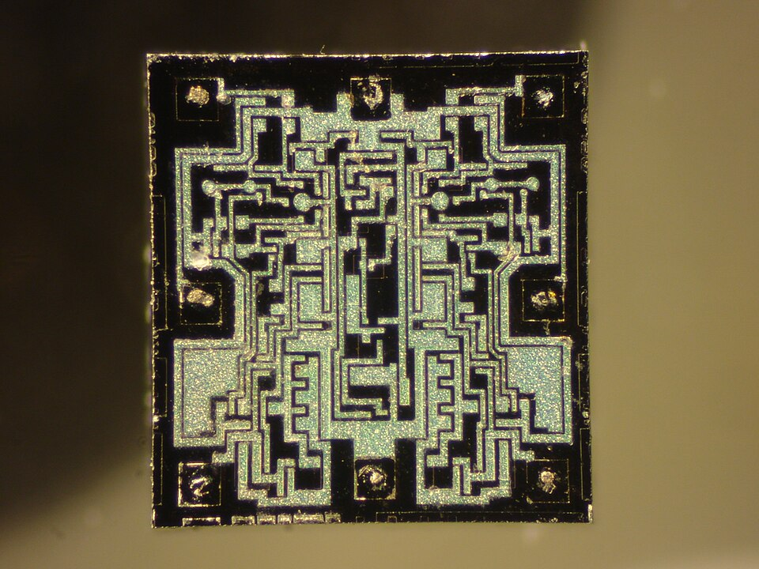
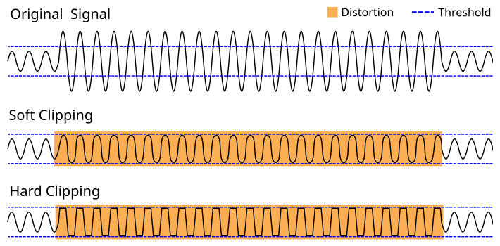
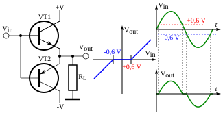
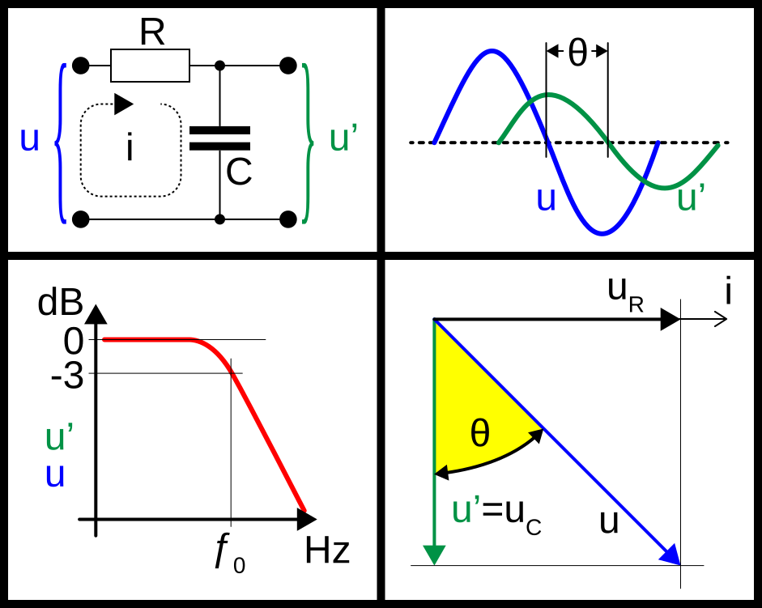
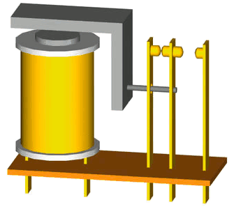
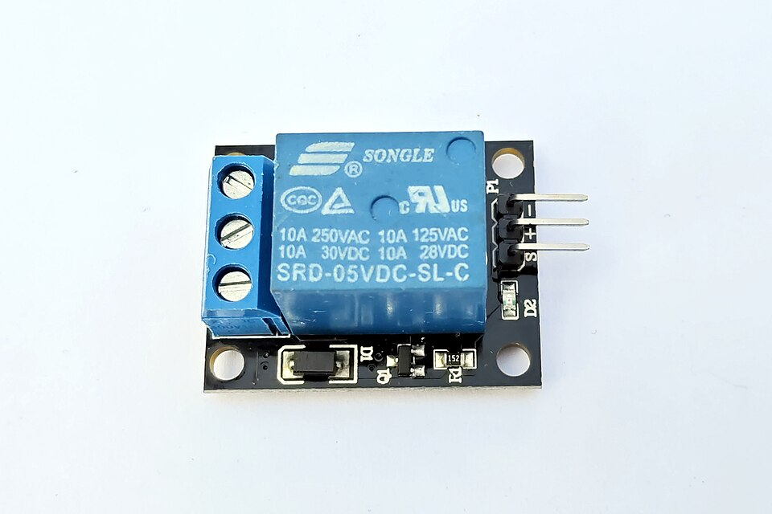
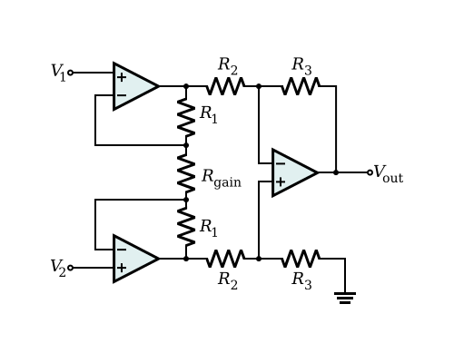

การปรับสภาพสัญญาณและ Op-Amp
ทำให้สัญญาณจากเซนเซอร์ “พร้อม” สำหรับ ADC — ขยาย บัฟเฟอร์ กรอง และเลื่อนระดับ ด้วยวงจร op-amp
เมื่อจบบทนี้ ผู้เรียนควรสามารถ
- อธิบายว่าทำไมการขยายสัญญาณจึงสำคัญต่อความละเอียดของ ADC
- ใช้กฎทองของ op-amp อุดมคติและ KCL หาอัตราขยายของวงจรพื้นฐาน 7 แบบ
- ออกแบบโดยคำนึงถึงข้อจำกัดของ op-amp จริง (saturation, single supply, crossover, GBP, offset)
- คำนวณเดซิเบลและออกแบบวงจรกรองความถี่ต่ำ RC
- เลือกระหว่างการขยายแรงดัน (op-amp) กับการขยายกระแส (ทรานซิสเตอร์/รีเลย์)
- อธิบายการทำงานของ instrumentation amplifier ร่วมกับ Wheatstone bridge
2.1ทำไมต้องปรับสภาพสัญญาณ
ADC ของ ESP32 แบ่งช่วง 0–3.3 V ออกเป็น 4,096 ระดับ ถ้าป้อนสัญญาณ 0–50 mV เข้าไปตรง ๆ จะใช้ช่วงเพียง 50/3300 ≈ 1.5% หรือประมาณ 62 ระดับจาก 4,096 — ความละเอียดหยาบลงราว 66 เท่า
หน้าที่ของการปรับสภาพสัญญาณ
| หน้าที่ | ปัญหาที่แก้ | วงจร |
|---|---|---|
| Amplification | สัญญาณเล็กเกินกว่า ADC จะแยกแยะได้ | Non-inverting amp, Instrumentation amp |
| Buffering | วงจรถัดไปดึงกระแส ทำให้ค่าที่อ่านเพี้ยน | Voltage follower |
| Filtering | สัญญาณรบกวน 50 Hz จากไฟบ้าน การสั่นสะเทือน | RC low-pass, Active filter |
| Level shift / Scaling | สัญญาณมีทั้งบวกและลบ แต่ ADC รับได้เฉพาะ 0–3.3 V | Divider, Summing amp |
| Excitation | เซนเซอร์แบบความต้านทานต้องมีไฟเลี้ยงจึงจะให้สัญญาณ | Divider, Wheatstone bridge |
| Isolation / Protection | กันไฟแรงสูงไม่ให้เข้าไมโครคอนโทรลเลอร์ | Opto-isolator, Relay |
2.2Op-Amp อุดมคติ
แบบจำลองภายในของ op-amp ประกอบด้วยความต้านทานอินพุต rin ระหว่างขาอินพุตทั้งสอง แหล่งจ่ายแรงดันควบคุม V = A(V+ − V−) และความต้านทานเอาต์พุต rout โดย A คืออัตราขยายวงเปิด (open-loop gain)
| สมบัติอุดมคติ | ความหมาย |
|---|---|
| rin → ∞ | iin → 0 ไม่ดึงกระแสจากวงจรก่อนหน้า |
| rout → 0 | ขับวงจรถัดไปได้โดยแรงดันไม่ตก |
| A → ∞ | V+ − V− = Vo/A → 0 |
- iin = 0 — ไม่มีกระแสไหลเข้าขาอินพุต
- V+ = V− — ใช้ได้เมื่อมี negative feedback เท่านั้น
LM358 (Dual Op-Amp) ที่ใช้ในปฏิบัติการ[2]
| ขา | หน้าที่ | ขา | หน้าที่ |
|---|---|---|---|
| 1 | Out A | 8 | V+ (+12 V) |
| 2 | In A− (inverting) | 7 | Out B |
| 3 | In A+ (non-inverting) | 6 | In B− |
| 4 | V− (GND) | 5 | In B+ |
- ไฟเลี้ยง: single supply 3–32 V หรือ ±1.5 ถึง ±16 V — ในแล็บใช้ 12 V เดี่ยว ไม่ต้องมีไฟลบ
- ช่วงอินพุต: ครอบคลุม 0 V ถึง (ไฟเลี้ยง − 1.5 V) จึงอ่านเซนเซอร์ที่ให้แรงดันใกล้ 0 V ได้
- ช่วงเอาต์พุต: ลงได้ใกล้ 0 V แต่ขึ้นได้เพียงประมาณ ไฟเลี้ยง − 1.5 V (≈ 10.5 V ที่ไฟเลี้ยง 12 V)
- Gain-bandwidth product: ≈ 1 MHz → ที่ gain 11 แบนด์วิดท์ใช้งานได้ ≈ 90 kHz
- Slew rate: ≈ 0.3 V/µs จำกัดความชันของขอบสัญญาณ

{kind=link}
2.3วงจรขยายแบบกลับเฟสและไม่กลับเฟส
Inverting amplifier
ขา + ต่อลงกราวด์ และจากกฎ V+ = V− จะได้ Va = 0 เรียกว่า virtual ground (โหนดมีแรงดันประมาณ 0 V โดยไม่ได้ต่อลงกราวด์จริง) ใช้ KCL ที่โหนด a โดย iin = 0:
Non-inverting amplifier
สัญญาณเข้าขา + จากกฎ V+ = V− จะได้ Va = Vi (virtual short) และ Va เป็นแรงดันจากวงจรแบ่งแรงดันของเอาต์พุต: Va = Vo·Ri/(Ri + Rf)
เอาต์พุตไม่กลับเฟสและ gain ≥ 1 เสมอ — เป็นวงจรหลักสำหรับขยายสัญญาณเซนเซอร์เกษตร ควรวัดค่าความต้านทานจริงก่อนคำนวณ gain
2.4วงจร Op-Amp อื่น ๆ
Summing amplifier
อินพุตหลายตัวต่อผ่านตัวต้านทานเข้าโหนด virtual ground เดียวกัน
ถ้าตัวต้านทานเท่ากันทั้งหมด Vo = −(V1 + V2 + V3) — หลักการเดียวกันใช้เลื่อนระดับสัญญาณ (บวกค่าคงที่เข้าไป) และใช้ใน DAC แบบ binary-weighted (บทที่ 3)
Differential amplifier
V1 เข้าขา − ผ่าน R1 (feedback Rf) ส่วน V2 เข้าผ่าน R1 ไปยังโหนด b ซึ่งมี Rf ลงกราวด์ ดังนั้น Va = Vb = V2·Rf/(R1 + Rf) และใช้ superposition:
ขยายเฉพาะผลต่าง จึงตัดสัญญาณรบกวนที่เข้าทั้งสองสายเท่ากัน (common mode) ได้ ข้อจำกัดคือ input impedance ต่ำ — แก้ด้วย instrumentation amplifier
Integrator
ใช้ R ที่อินพุตและ C ในทาง feedback: Vi/R + C·dVo/dt = 0
ใช้สะสมค่าตามเวลา เช่น ปริมาตรน้ำรวมจากอัตราการไหล และเป็นหัวใจของ ADC แบบ dual-slope (บทที่ 3)
Differentiator
ใช้ C ที่อินพุตและ R ในทาง feedback: C·dVi/dt + Vo/R = 0
Voltage follower (Buffer)
ต่อเอาต์พุตกลับเข้าขา − โดยตรง และป้อนสัญญาณที่ขา +
ประโยชน์อยู่ที่ current gain: input impedance สูงมาก (แทบไม่ดึงกระแสจากเซนเซอร์) และ output impedance ต่ำ (จ่ายกระแสให้วงจรถัดไปได้) จึงป้องกัน loading effect — ใน Lab 1 จะเห็นแรงดันของวงจรแบ่งแรงดันตกเมื่อต่อโหลด และแก้ด้วย follower ใน Activity 3.1
2.5ข้อจำกัดของ Op-Amp จริง
สูตรที่ผ่านมาสมมติ op-amp อุดมคติ ใช้ออกแบบได้ดี แต่ต้องรู้ว่าจะคลาดเคลื่อนเมื่อใด
| ข้อจำกัด | สิ่งที่เกิดขึ้น | ผลต่อการออกแบบ |
|---|---|---|
| Saturation | เอาต์พุตเกินไฟเลี้ยงไม่ได้ และขึ้นไม่ถึงไฟเลี้ยงด้วยซ้ำ | Gain 11 กับอินพุต 1.0 V คำนวณได้ 11 V แต่วัดได้ต่ำกว่า — เผื่อ headroom เสมอ |
| Single supply | มีเพียง 0 V และ +12 V ส่วนลบของสัญญาณถูกตัด | ไบแอสสัญญาณรอบ mid-rail M |
| Crossover distortion | เกิดรอยหักเมื่อสัญญาณผ่านจุดกึ่งกลาง จาก output stage | ต่อตัวต้านทาน pull-down 1 kΩ จากขา 1 ลง GND |
| Gain-bandwidth product | Gain สูงขึ้น แบนด์วิดท์ใช้งานแคบลง | วัด gain ที่ 50–1000 Hz หาจุด −3 dB |
| Offset และ bias current | มีค่าผิดพลาดเล็กน้อยแม้อินพุตเป็นศูนย์ | ที่ gain ×100 error ก็ ×100 ด้วย — แก้ด้วยการสอบเทียบ |

{kind=link}

{kind=link}
ตัวอย่าง: Lab 3 Activity 3.2 (non-inverting)
| ชุด | Rf | Ri | G | คำนวณ Vi → Vo |
|---|---|---|---|---|
| ก | 10 kΩ | 10 kΩ | 2 | 1.0 V → 2.0 V |
| ข | 100 kΩ | 10 kΩ | 11 | 0.5 V → 5.5 V |
| ค | 100 kΩ | 10 kΩ | 11 | 1.0 V → 11 V (?) — วัดได้จริงไม่เกิน ≈ 10.5 V เพราะ saturation |
Single supply และ mid-rail
เมื่อไฟเลี้ยงมีเพียง 0 V และ +12 V การขยายสัญญาณ AC รอบ 0 V จะสูญเสียครึ่งลบ วิธีแก้คือไบแอสสัญญาณไว้ที่ครึ่งหนึ่งของไฟเลี้ยง M = 12/2 = 6 V ด้วยวงจรแบ่งแรงดันตัวต้านทานเท่ากันสองตัว แล้วตัดส่วน DC ออกด้วยตัวเก็บประจุที่เอาต์พุต — แนวคิดเดียวกับขา REF ของ instrumentation amplifier
2.6เดซิเบล (dB)
หน่วย bel ถูกนิยามที่ Bell Labs เพื่อวัดการสูญเสียกำลังในสายโทรศัพท์: B = log10(P2/P1) และ 1 B = 10 dB
เพราะ P = V2/R (โหลดเท่ากัน) จึงได้ 10 log(V22/V12) =
แปลงกลับ: V2/V1 = 10dB/20 และ P2/P1 = 10dB/10
| dB | อัตราส่วนแรงดัน | อัตราส่วนกำลัง |
|---|---|---|
| +20 | ×10 | ×100 |
| +6 | ×2 | ×4 |
| 0 | ×1 | ×1 |
| −3 | ×0.707 | ×0.5 |
| −6 | ×0.5 | ×0.25 |
| −10 | ×0.316 | ×0.1 |
| −20 | ×0.1 | ×0.01 |
- ลอการิทึมเปลี่ยนการคูณ gain ของแต่ละขั้นเป็นการบวก dB เช่น ขยาย ×100 (+40 dB) ตามด้วยตัวกรอง ×0.707 (−3 dB) รวมเป็น ×70.7 (+37 dB)
- ที่ −3 dB กำลังเหลือครึ่งหนึ่ง (แรงดันเหลือ 0.707) — เป็นนิยามสากลของแบนด์วิดท์
- dB เป็นค่าเทียบกับค่าอ้างอิงเสมอ สเกลสัมบูรณ์จะระบุค่าอ้างอิง เช่น dBm (1 mW), dBV (1 V), dB SPL (20 µPa)
2.7วงจรกรองความถี่ต่ำ (Low-pass Filter)
สัญญาณจริงมีสิ่งที่ไม่ต้องการปนมา เช่น สัญญาณรบกวน 50 Hz จากไฟบ้าน การสั่นสะเทือนทางกล และสัญญาณรบกวนความถี่สูง
ตัวอย่าง: R = 10 kΩ, C = 1 µF → fc = 1/(2π × 104 × 10−6) ≈ 16 Hz ที่ 50 Hz: 1/√(1 + (50/16)2) ≈ 0.30 หรือประมาณ −10 dB

{kind=link}
2.8การขับโหลด: ขยายกระแส
Op-amp ขยายแรงดันแต่จ่ายกระแสได้น้อย (LM358 ระดับสิบ mA) ส่วนขา GPIO ของ ESP32 จ่ายได้เพียงประมาณ 20 mA การขับปั๊ม วาล์ว หรือรีเลย์จึงต้องใช้อุปกรณ์ขยายกระแส
| อุปกรณ์ | การควบคุม | หมายเหตุ |
|---|---|---|
| BJT | กระแสเบสเล็ก ๆ ควบคุมกระแสคอลเลกเตอร์: IC = βIB | ใช้ตัวต้านทานเบส RB และไดโอด flyback คร่อมโหลดขดลวด |
| MOSFET | ควบคุมด้วยแรงดันเกต (IG ≈ 0) | เหมาะกับโหลดกระแสสูง เลือกแบบ logic-level ให้ 3.3 V ขับได้ |
| Opto-isolated relay | GPIO → LED ใน opto → ทรานซิสเตอร์ → ขดลวดรีเลย์ → หน้าสัมผัส | แยกฝั่งไฟ 220 V ออกจาก MCU โดยสมบูรณ์ — ใช้ในโครงงาน |

{kind=link}

{kind=link}
ลำดับการขยายกระแส: GPIO ≈ 20 mA → ทรานซิสเตอร์ 0.1–1 A → หน้าสัมผัสรีเลย์ สูงสุด 10 A
2.9Instrumentation Amplifier
ประกอบด้วย op-amp 3 ตัว:
- A1 และ A2 ทำหน้าที่ buffer ให้ input impedance สูงมาก ไม่รบกวนแหล่งสัญญาณ โดยมีโซ่ตัวต้านทาน A1 out → R1 → RG → R1 → A2 out
- RG ตัวเดียวกำหนด gain เพราะต่อคร่อมระหว่างขา inverting ของ A1 และ A2 โดยตรง
- A3 เป็น differential amplifier ตัด common-mode noise
- ขา REF: เอาต์พุตวัดเทียบกับขานี้ ต่อ GND ให้เอาต์พุตอยู่รอบ 0 V หรือต่อ M ให้อยู่รอบ 6 V

{kind=link}
ใช้ร่วมกับ Wheatstone bridge
Bridge คือวงจรแบ่งแรงดันสองชุดที่ผลต่างมีเพียงไม่กี่ mV จุดกลางแต่ละชุดต่อเข้า IN+ และ IN− ของ INA128 ต่อ RG คร่อมขา RG และต่อ REF ไปที่ M
- Input impedance สูง ไม่ทำให้ bridge เสียสมดุล (ต่างจาก differential amp แบบตัวต้านทานธรรมดา)
- สายยาวในแปลงรับสัญญาณรบกวนเท่ากันทั้งสองเส้น — ถูกตัดทิ้ง
- กำหนด gain ด้วย RG ตัวเดียว ไม่ต้องจับคู่ตัวต้านทาน
- REF = M ทำให้เอาต์พุตอยู่กลางช่วง เหมาะกับ ADC ที่รับเฉพาะค่าบวก
Lab 6 จะใช้วงจรนี้กับ strain gauge และเซนเซอร์ความดัน แล้วสอบเทียบกับเครื่องมืออ้างอิง
✎แบบฝึกหัดท้ายบท
ตอนที่ 1: ปรนัยและเติมตัวเลข
กฎทองของ op-amp อุดมคติ (เมื่อมี negative feedback) คือข้อใด?
วงจร voltage follower มี voltage gain = 1 แล้วนำไปใช้ประโยชน์อะไร?
LM358 ใช้ไฟเลี้ยง 12 V เดี่ยว ออกแบบ gain 11 และป้อน 1.0 V จะวัดเอาต์พุตได้ประมาณเท่าใด?
ทำไมวงจร differentiator จึงไม่นิยมใช้กับสัญญาณเซนเซอร์ในภาคสนาม?
เหตุใด instrumentation amplifier จึงเหมาะกับ Wheatstone bridge มากกว่า differential amplifier ธรรมดา?
ต้องการให้ ESP32 สั่งเปิด-ปิดปั๊ม 220 V วิธีใดเหมาะสมที่สุด?
Inverting amplifier มี Rf = 100 kΩ, Ri = 10 kΩ ป้อน Vi = 0.2 V (ไฟเลี้ยงคู่ ±12 V) จงหา Vo
Non-inverting amplifier มี Rf = 47 kΩ, Ri = 10 kΩ จงหา gain
วงจรขยายแรงดัน 100 เท่า คิดเป็นกี่ dB?
วงจร RC low-pass มี R = 10 kΩ, C = 10 µF ความถี่ตัดเท่าใด?
ต้องการให้ INA128 มี gain = 100 ต้องใช้ RG เท่าใด?
ตอนที่ 2: โจทย์คำนวณพร้อมเฉลย
โจทย์ 1 — เลือก gain สำหรับเซนเซอร์ 0–50 mV (แบบฝึกหัดท้ายคาบ)
เซนเซอร์ให้สัญญาณ 0–50 mV และ ADC รับ 0–3.3 V จงเลือก gain ที่ใช้ช่วงได้เต็มที่โดยไม่ saturate พร้อมระบุระยะเผื่อ
Gain อุดมคติ = 3.3/0.05 = 66 แต่ถ้าใช้ 66 พอดี สัญญาณสูงสุดจะชนขอบบนของ ADC และ offset ของ op-amp ก็ถูกขยาย ×66 ด้วย
ควรเผื่อ headroom ประมาณ 10% → gain ≈ 60 ให้เอาต์พุต 0–3.0 V (ตรงกับตัวอย่างในหัวข้อ 2.1) ด้วย non-inverting: 1 + Rf/Ri = 60 → เช่น Ri = 1 kΩ, Rf = 59 kΩ หรือ INA128: RG = 50 k/59 ≈ 847 Ω
นอกจากนี้ ADC ของ ESP32 ไม่เป็นเชิงเส้นใกล้ 0 V และใกล้ขอบบน (บทที่ 3) และ LM358 ขึ้นไม่ถึงไฟเลี้ยง ถ้าเลี้ยง op-amp ด้วย 3.3 V จะต้องลด gain ลงอีก
โจทย์ 2 — ออกแบบตัวกรองสำหรับเซนเซอร์ความชื้นดิน
ต้องการตัวกรอง RC ที่มี fc ≈ 1 Hz โดยมีตัวเก็บประจุ 10 µF จงหาค่า R และคำนวณการลดทอนที่ 50 Hz
R = 1/(2πfcC) = 1/(2π × 1 × 10−5) ≈ 15.9 kΩ (ใช้ค่ามาตรฐาน 15 kΩ หรือ 16 kΩ)
ที่ 50 Hz: |H| = 1/√(1 + 502) ≈ 0.020 → 20 log(0.02) ≈ −34 dB ลดสัญญาณรบกวนจากไฟบ้านเหลือประมาณ 2%
โจทย์ 3 — พิสูจน์ gain ของ non-inverting amplifier
จากรูปที่ 2.3 ใช้กฎทองของ op-amp พิสูจน์ว่า Vo = (1 + Rf/Ri)Vi
กฎข้อ 2: Va = V+ = Vi
กฎข้อ 1: ไม่มีกระแสเข้าขา − ดังนั้นกระแสผ่าน Rf เท่ากับกระแสผ่าน Ri: (Vo − Va)/Rf = Va/Ri
จัดรูป: Vo = Va(1 + Rf/Ri) = (1 + Rf/Ri)Vi ∎
โจทย์ 4 — การบ้าน: ทำไม gain ของ instrumentation amp ขึ้นกับ RG ตัวเดียว
อธิบายว่าทำไม gain ของขั้นอินพุตขึ้นกับ RG เพียงตัวเดียว และขา REF มีบทบาทอย่างไร
จากกฎ V+ = V− ขา − ของ A1 และ A2 มีแรงดัน V1 และ V2 ตามอินพุต จึงมีแรงดัน (V2 − V1) คร่อม RG ทำให้เกิดกระแส i = (V2 − V1)/RG
กระแสนี้ไม่ไหลเข้าขา op-amp จึงไหลผ่าน R1 ทั้งสองตัวด้วย แรงดันระหว่างเอาต์พุต A1 และ A2 จึงเป็น i(R1 + RG + R1) = (V2 − V1)(1 + 2R1/RG) — ใน INA128 ค่า 2R1 = 50 kΩ จึงได้ G = 1 + 50 kΩ/RG
สัญญาณ common mode ทำให้ปลายทั้งสองของ RG ขึ้นลงพร้อมกัน ไม่เกิดกระแส จึงไม่ถูกขยาย แล้ว A3 ตัดทิ้งอีกชั้น ขา REF เป็นจุดอ้างอิงของ A3 — เอาต์พุต = G(V2 − V1) + VREF จึงใช้เลื่อนระดับเอาต์พุตไปไว้ที่ M ได้
§แหล่งอ้างอิง
เอกสาร
- Udompetaikul, V. (2026). INS02: Signal Conditioning and Operational Amplifiers (v20) [เอกสารประกอบการสอน]. รายวิชา 01386309 Agricultural Instrumentation & IoT, สถาบันเทคโนโลยีพระจอมเกล้าเจ้าคุณทหารลาดกระบัง.
- Texas Instruments. LM358 — Dual operational amplifier (product page and datasheet). https://www.ti.com/product/LM358
- Texas Instruments. INA128 — Precision, low-power instrumentation amplifier (product page and datasheet). https://www.ti.com/product/INA128
รูปประกอบ
รูปจาก Wikimedia Commons ใช้ตามสัญญาอนุญาตที่ระบุ โดยไม่ได้ดัดแปลงนอกจากย่อขนาด ส่วนรูปวงจรและกราฟที่ไม่มีเครดิตจัดทำขึ้นใหม่สำหรับสื่อการสอนนี้
- รูปที่ 2.1 — Epop, “UTC PL0B LM358 JC N5.JPG”, Wikimedia Commons, https://commons.wikimedia.org/wiki/File:UTC_PL0B_LM358_JC_N5.JPG (CC BY-SA 3.0)
- รูปที่ 2.4 — Iainf; derivative work: Mikhail Ryazanov, “Clipping waveform.svg”, Wikimedia Commons, https://commons.wikimedia.org/wiki/File:Clipping_waveform.svg (CC BY 3.0)
- รูปที่ 2.5 — Rohitbd; vectorization: Д. Ильин, “Crossover distortion.svg”, Wikimedia Commons, https://commons.wikimedia.org/wiki/File:Crossover_distortion.svg (Public domain)
- รูปที่ 2.7 — Fred the Oyster, “Low-pass filter diagram.svg”, Wikimedia Commons, https://commons.wikimedia.org/wiki/File:Low-pass_filter_diagram.svg (CC BY-SA 4.0)
- รูปที่ 2.8 — Digigalos, “Relay principle horizontal new.gif”, Wikimedia Commons, https://commons.wikimedia.org/wiki/File:Relay_principle_horizontal_new.gif (CC BY-SA 3.0)
- รูปที่ 2.9 — Suyash Dwivedi, “SRD-05VDC-SL-C 5V one-channel relay module.jpg”, Wikimedia Commons, https://commons.wikimedia.org/wiki/File:SRD-05VDC-SL-C_5V_one-channel_relay_module.jpg (CC BY-SA 4.0)
- รูปที่ 2.10 — Inductiveload, “Op-Amp Instrumentation Amplifier.svg”, Wikimedia Commons, https://commons.wikimedia.org/wiki/File:Op-Amp_Instrumentation_Amplifier.svg (Public domain)